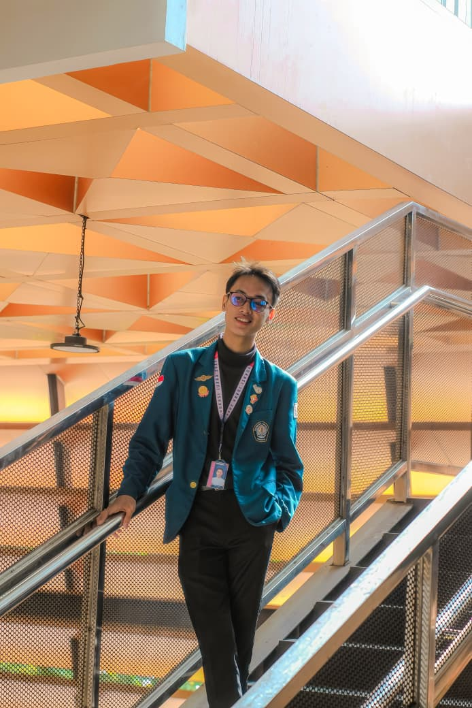
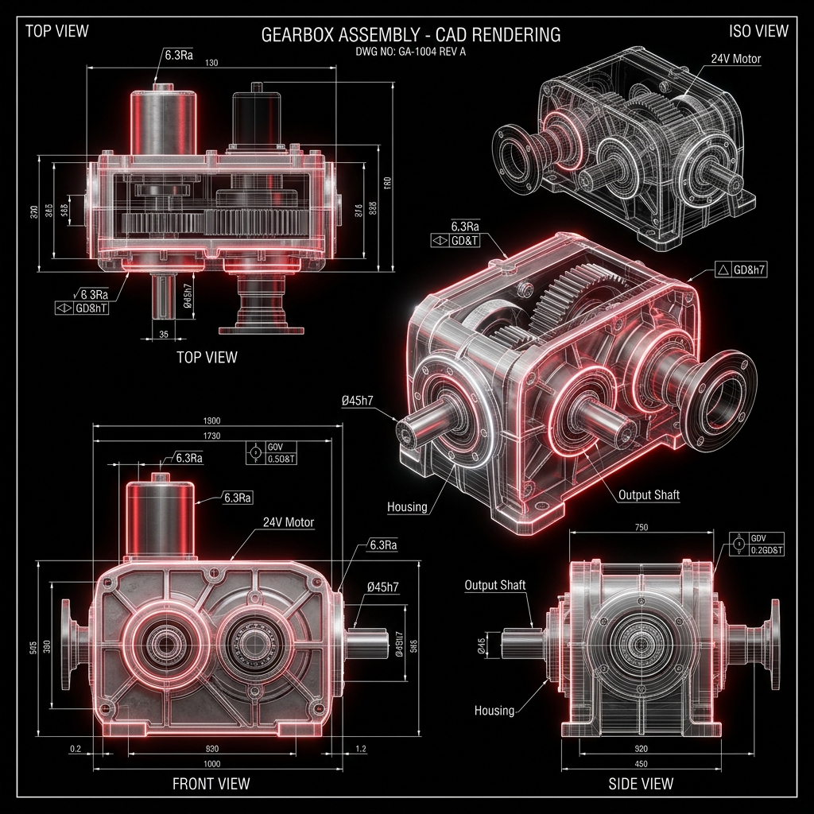

Dari Ide Menjadi Desain, Desain Menjadi Solusi
Saya Tiaman Gea, mahasiswa Rekayasa Perancangan Mekanik di Universitas Diponegoro. Berfokus pada efisiensi kerja, analisis desain berbantuan komputer (CAD/CAE), dan keselamatan kerja industri.

[GANTI PROFILE.JPG]
Kualifikasi & Filosofi Kerja
Menggabungkan kemampuan analisis teknis dengan ketangkasan organisasi serta empati sosial yang tinggi.
Efisiensi & Keselamatan
Sebagai mahasiswa Perancangan Mekanik, saya didorong untuk merancang sistem mekanis yang tidak hanya efisien, namun juga mengutamakan faktor keselamatan kerja industri (K3).
Interpersonal & Komunikasi
Memiliki kapasitas komunikasi dan negosiasi yang teruji lewat peran-peran strategis dalam organisasi kemahasiswaan nasional dan pendampingan disabilitas.
Kolaborasi Multi-disiplin
Terbiasa memimpin tim kepanitiaan berskala nasional, berkoordinasi dengan narasumber profesional, sponsor, juri, dan institusi eksternal untuk melahirkan sinergi yang produktif.
Sains & Penelitian
Terus melatih rasa ingin tahu di bidang inovasi sains internasional yang terbukti melalui raihan medali perak dalam ajang riset sains global.
Pendidikan Formal
Fondasi pengetahuan teoretis rekayasa, metode numerik, dan pemodelan analitis yang membentuk kapabilitas profesional saya.
Universitas Diponegoro
Rekayasa Perancangan Mekanik — Sekolah Vokasi
Mendalami ilmu rekayasa terapan yang berfokus pada mekanika kekuatan material, kalkulasi dinamika fluida, metode komputasi numerik, penerapan toleransi geometris (GD&T) berskala ISO, serta analisis tegangan menggunakan Finite Element Analysis (FEA).
SMA Negeri 1 Tandun
Peminatan Ilmu Pengetahuan Alam (IPA)
Mematangkan penguasaan mendalam pada mata pelajaran sains inti termasuk Fisika Mekanika, Matematika Kalkulus Diferensial & Integral, serta Kimia Terapan. Memberikan fondasi analitis kuat dan pola pikir sistematis sebelum melangkah ke jenjang Pendidikan Tinggi Rekayasa Mekanikal.
PENCAPAIAN
Eksplorasi representasi Bento Grid yang merangkum hasil kerja keras, dedikasi ilmiah, serta kontribusi aktif dalam lingkungan akademik dan sosial.
Silver Medal - AISEEF & IYSA International Science Competition
Memperoleh medali perak dalam ajang riset sains internasional bergengsi yang diselenggarakan oleh AISEEF dan IYSA, bekerja sama dengan Fakultas Teknik Universitas Diponegoro. Fokus riset mencakup pemanfaatan teknologi mekanis inovatif untuk pemecahan masalah global.
Juara 2 Kompetisi Esai Teknologi & Inovasi Energi
Menyabet Juara 2 tingkat Nasional dalam ajang gagasan ilmiah terapan. Mengusung inovasi rancangan alat mekanisasi industri perkebunan sawit berkelanjutan yang berorientasi pada efisiensi energi serta otomatisasi sistem kontrol.
Awardee BPDPKS Scholarship
Penerima beasiswa eksklusif dari Badan Pengelola Dana Perkebunan Kelapa Sawit (BPDPKS). Beasiswa ini diberikan kepada talenta muda terpilih untuk mendukung riset, inovasi, dan pengembangan teknologi di sektor industri kelapa sawit nasional yang berkelanjutan.
Vokasi Juara National Event
Memimpin pengelolaan kompetisi esai & poster nasional guna meningkatkan kreativitas mahasiswa nasional.
School of Mawapres
Mengatur komunikasi profesional dengan narasumber bereputasi, pembuatan materi briefing, dan koordinasi acara.
Relawan Disabilitas
Mendampingi mahasiswa berkebutuhan khusus di Universitas Lancang Kuning demi aksesibilitas yang setara.
Visi Riset Mekanikal
Mendedikasikan ilmu rekayasa untuk merancang sistem mekanis ramah lingkungan berbasis kecerdasan komputasi CAD/CAE guna mendukung industrialisasi hijau.
PENGALAMAN
Peraih Medali Perak Internasional (AISEEF)
Kolaborasi Riset - Provinsi Jawa Tengah, Indonesia
Menghasilkan terobosan ilmiah di kancah global. Kompetisi ini menguji orisinalitas riset, aplikasi teknik, dan kontribusi nyata dalam melahirkan solusi mutakhir yang bernilai tinggi.
Juara 2 Kompetisi Esai Teknologi & Inovasi Energi
Prestasi Tingkat Nasional - Gagasan Ilmiah Terapan
Mengajukan gagasan ilmiah mengenai rancangan mekanisasi industri sawit hemat energi berbasis integrasi otomasi mikrokontroler. Karya tulis dipertahankan di hadapan dewan juri pakar nasional dengan penilaian keaslian ide serta aplikabilitas rekayasa yang luar biasa.
Ketua Pelaksana - Vokasi Juara
Badan Eksekutif Mahasiswa (BEM) Sekolah Vokasi UNDIP
Mengomandoi perhelatan nasional kompetisi esai & poster. Bertanggung jawab atas pengelolaan keuangan acara yang efektif, penggalangan dana sponsor, hubungan kemitraan dengan juri, serta menyusun skema evaluasi pasca-acara guna optimalisasi agenda di masa mendatang.
Humas - Sekolah Mawapres
Sekolah Mahasiswa Berprestasi Universitas Diponegoro
Menghubungkan tim pelaksana dengan pemateri berprestasi. Menyusun lembar pengarahan (*briefing sheet*) formal, menyusun kesepakatan waktu yang efisien, dan memastikan seluruh rangkaian diskusi panel berlangsung dengan standar profesional yang tinggi.
Relawan Disabilitas
Universitas Lancang Kuning
Mendedikasikan waktu mendampingi rekan-rekan mahasiswa berkebutuhan khusus. Membantu mobilisasi fisik yang aman dan memfasilitasi adaptasi metode pembelajaran alternatif agar transfer materi perkuliahan berjalan lancar secara inklusif.
KEAHLIAN
⚡ Klik kartu keahlian untuk melompat langsung ke detail studi kasus terkait!
Kombinasi fungsional antara kecakapan kalkulasi rekayasa perangkat lunak modern dan kemampuan interpersonal yang kuat.
Desain Mekanikal & CAD
Productivity Tools
Interpersonal & Soft Skills
PORTOFOLIO PROJEK
Eksplorasi mendalam mengenai bagaimana setiap kluster keahlian diterapkan secara taktis dalam proyek rekayasa, manajemen organisasi, dan advokasi sosial.
Desain Mekanikal & CAD

Rancang Bangun Komponen Presisi & Analisis Dinamik
Melalui perkuliahan di **Rekayasa Perancangan Mekanik UNDIP**, saya mengaplikasikan perangkat lunak CAD/CAE canggih untuk merancang inovasi mekanis. Saya mengkhususkan diri dalam pemodelan parametrik 3D, pembuatan gambar kerja standar ISO 2D detail, serta visualisasi assembly yang kompleks.
Proyek ini melibatkan kalkulasi rasio transmisi roda gigi, perancangan poros transmisi daya, serta optimasi geometri untuk mengurangi konsentrasi tegangan mekanik tanpa mengurangi fungsionalitas keseluruhan struktur.
Produktivitas & Analisis Data

Analisis Anggaran Organisasi & Dokumentasi Terstruktur
Memanfaatkan **Microsoft Excel** dengan rumus logika kompleks, Pivot Table, dan analisis data untuk mengelola keuangan kepanitiaan nasional *Vokasi Juara 2025* dengan transparansi mutlak. Seluruh anggaran dialokasikan secara presisi guna mencegah pembengkakan dana operasional.
Dengan **Microsoft Word & PowerPoint**, saya menyusun proposal kerja sama sponsor eksternal dan lembar briefing narasumber yang rapi, informatif, dan memiliki visualisasi visual yang kuat untuk presentasi di hadapan juri dan mitra strategis.
Kepemimpinan & Advokasi Sosial

Kepemimpinan Event Nasional & Advokasi Inklusif
Memimpin tim BEM serta puluhan relawan dalam menyukseskan program kerja berskala nasional membutuhkan kestabilan emosi, kecerdasan interpersonal, dan kemampuan mendengar yang sangat baik. Saya mengoordinasikan pembagian tugas secara adil, memberikan motivasi tim, dan memitigasi konflik internal secara bijaksana.
Di sisi sosial, kontribusi saya asisten **Relawan Pendamping Disabilitas** membuktikan empati mendalam dalam merancang skema pembelajaran adaptif dan bantuan fisik taktis yang menunjang kesetaraan hak belajar di lingkungan kampus.
Koneksi Profesional
Tertarik berkolaborasi dalam proyek desain mekanis, pengujian struktural CAD/CAE, ataupun membutuhkan relawan berdedikasi tinggi? Silakan hubungi saya melalui form di samping atau melalui detail kontak di bawah ini.
Pesan Anda Berhasil Terkirim
Terima kasih telah menghubungkan koneksi profesional dengan saya. Saya akan meninjau pesan Anda dan segera menghubungi kembali dalam waktu dekat.
Secure transmission: ACTIVE